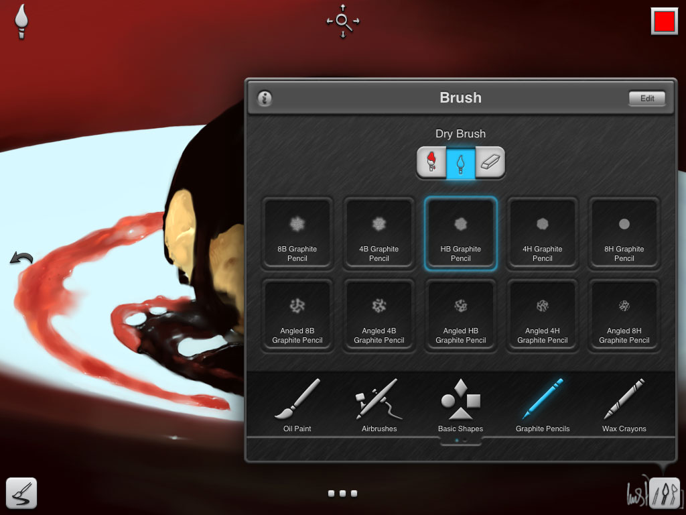
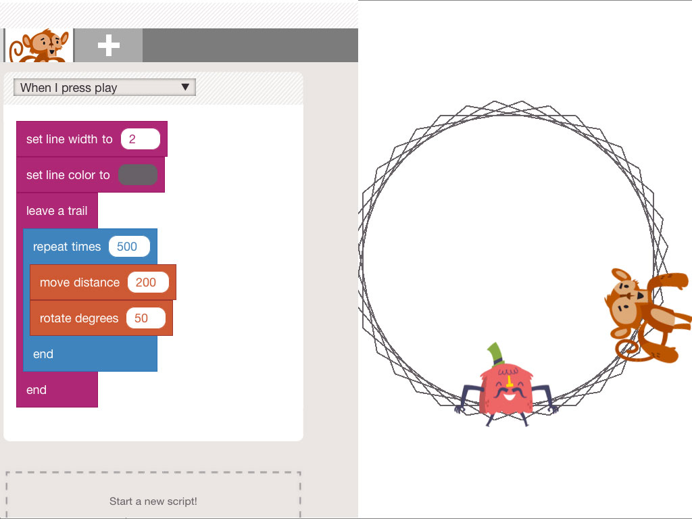

This is a new section in The Nimble Magazine wrapping up what's new and mentionable in the app-market.
This is a new section in The Nimble Magazine wrapping up what's new and mentionable in the app-market.
With its latest update, Inspire now has pencils and crayons to suit all your longings in terms of emulative tool behaviour. Along with the newly introduced interface of the 2.0 version, Inspire is again on a good update cycle.

Not a painting app in the first place, still one of my fave apps in the last weeks, Hopscotch is a programming environment for kids, pretty much inspired by Scratch. But it's also interesting for the artist in us, since e.g. it let's you create patterns by using loops, conditionals and other basic programming principles. For all of you who want to understand how pattern generators work, or if you want to understand software better, this is a good app to start with.
